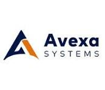

Avexa Systems Pvt Ltd
AWS DevOps Engineer | Hyderabad
- Built and maintained Jenkins CI/CD pipelines to automate build, deployment and release activities across development and staging environments.
- Containerized applications using Docker and managed container orchestration using Kubernetes to ensure scalable and consistent deployments.
- Provisioned and managed cloud infrastructure on AWS using Terraform and implemented Infrastructure as Code (IaC) practices.
- Utilized AWS services including EC2, S3, IAM and CloudWatch for infrastructure setup, access management, monitoring and log analysis.
- Managed source code, configurations and release activities using Git and GitHub version control.
- Implemented continuous monitoring and performance visualization using Prometheus and Grafana to ensure application availability and system health.
- Supported build and release management processes, performed deployment validation and assisted in troubleshooting deployment-related issues.
- Collaborated with development teams to maintain reliable deployment workflows and ensure stable application delivery.